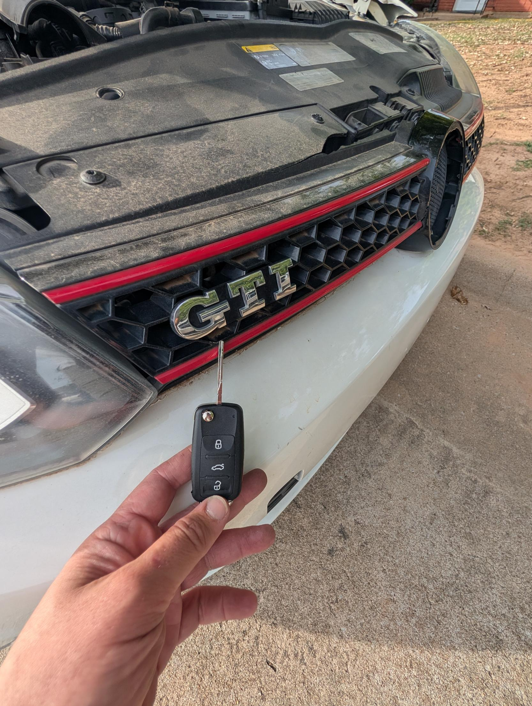
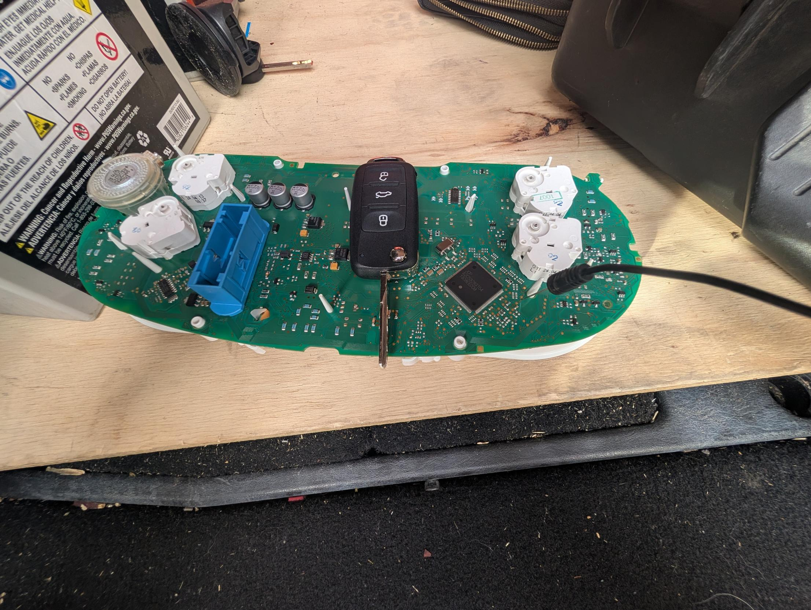

Can a Locksmith Make a Key for a VW or Other European Car?

A fresh VW GTI key we made and programmed on-site.
Often, yes — but it depends on the car, and most locksmiths won't take European work at all. European vehicles like VW, Audi, BMW, and Mercedes run tighter, more complex security than the average car, which scares a lot of shops off. We handle a lot of European work right at your vehicle. Because every import is different, the honest answer for your car is "call and we'll tell you" — but there's a good chance we can help, no dealership trip required. Here's how it actually works.
Got a European car and need a key? Call (405) 870-5397.
Call Now — (405) 870-5397Why European cars scare off most locksmiths
European manufacturers lock their keys behind some of the toughest security in the industry — encrypted immobilizers, secure gateways, and data that takes specialized tools and know-how to work with. A lot of locksmiths simply won't touch VW, Audi, BMW, or Mercedes because of it, and send you straight to the dealer. That's the gap we work in: the European jobs other shops turn away.
What we can do — on-site
We make and program keys for a lot of European vehicles right at your car — no tow, no dealership wait. A recent one: a VW GTI that needed a key, done on the spot.

European security runs deep — sometimes the job means going into the instrument cluster to read the immobilizer data. That's the level of work these take.
That's a real GTI job in progress — and it shows what European sometimes takes. On some of these, programming a key means going deeper than plugging into the OBD port; it can mean working directly with the instrument cluster to read the car's immobilizer data. It's involved work, and it's exactly the kind of thing we're set up for.
The honest part — it's case-by-case
Here's the straight talk: European is not one-size-fits-all. What's possible depends on the make, model, year, and whether you still have a working key. Some European jobs we handle easily on-site; a few are genuinely better sent to the dealer, and when that's the case for your car, we'll tell you — we're not going to take a job that belongs somewhere else. The only way to know for sure is to call with your year, make, and model and let us check.
Why not just go to the dealer?
When we can do your European key, it's usually faster and cheaper than the dealership — we come to you, you skip the tow, and you skip the dealer's timeline. The dealer is still the right call for a few specific European jobs, and we'll point you there honestly when it is. But don't assume the dealer is your only option on an import — a lot of the time, it isn't.
Not sure about your European car? Call (405) 870-5397 and we'll tell you straight.
Call Now — (405) 870-5397Frequently Asked Questions
Can a locksmith make a key for a VW or Audi?
Often, yes. We make and program keys for a lot of VW and Audi vehicles on-site. It depends on the exact model, year, and your key situation, so call with those details and we'll tell you what's possible for yours.
Why won't most locksmiths work on European cars?
European vehicles use more complex, tightly encrypted security than most cars, which takes specialized tools, data, and experience. Many shops won't invest in that, so they turn European work away. We take it on.
Is a locksmith cheaper than the dealer for a European key?
When we can do the job, usually yes — you avoid the tow, the dealer markup, and the wait. A few European jobs are better handled at the dealer, and we'll tell you honestly if yours is one of them.
Do I have to tow my car to you?
No — we're mobile and come to you across the OKC metro. That's a big part of why going with us beats the dealership when we can do the job.
What do you need from me to check?
Your year, make, and model — and whether you still have a working key. With that, we can tell you what we're able to do for your specific vehicle. Call (405) 870-5397.